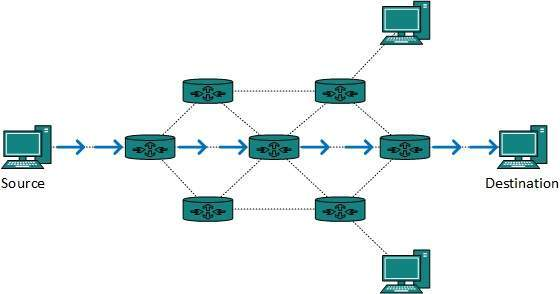

ROUTING

IP routing is a process of transferring data from one network to another as IP packets. By default, hosts of different networks cannot communicate with each other. If two hosts located in different IP networks want to communicate with each other, they use IP routing. Routers provide IP routing. A router is a specialized device that connects different IP networks. Let’s take a simple example. Suppose two IP hosts; 10.10.10.10/8 and 20.20.20.20/8 want to communicate. Since they both belong to the different IP networks, they need a router to communicate. The following image shows this example.
Example of Routing:
Routers examine the destination IP address and make their routing decisions accordingly. To determine out which interface the packet will be forwarded, routers use routing tables which list all networks for which routes are known. Consider the following example:

In the example above we have a simple network of two computers and a router. Host A wants to communicate with Host B. Because hosts are on different subnets, Host A sends its packet to the default gateway (the router). The router receives the packet, examines the destination IP address, and looks up into its routing table to figure out which interface the packet will be sent. It then sends the packet to Host B.
TYPES OF ROUTING
1.Static routing – Static routing is a process in which we have to manually add routes in routing table.
2.Default Routing – This is the method where the router is configured to send all packets towards a single router (next hop). It doesn’t matter to which network the packet belongs, it is forwarded out to router which is configured for default routing. It is generally used with stub routers. A stub router is a router which has only one route to reach all other networks.
3.Dynamic Routing – Dynamic routing makes automatic adjustment of the routes according to the current state of the route in the routing table. Dynamic routing uses protocols to discover network destinations and the routes to reach it. RIP and OSPF are the best examples of dynamic routing protocol. Automatic adjustment will be made to reach the network destination if one route goes down.